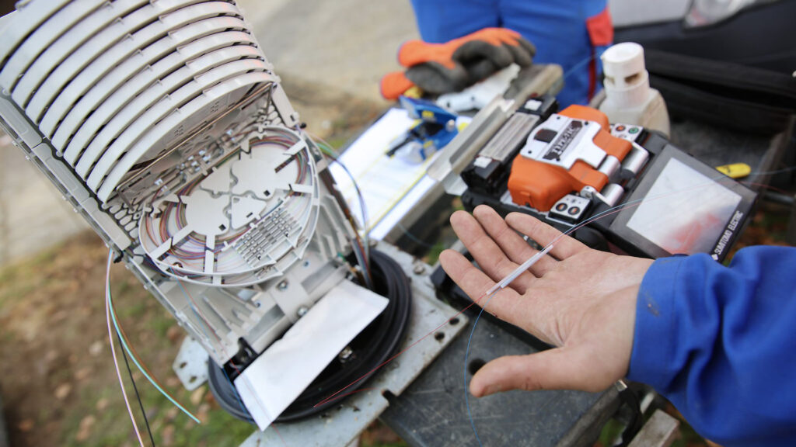

Nos Réalisations
Voici quelques exemples concrets de projets menés avec succès par JFK Evolution, illustrant notre expertise dans les télécommunications.
Installation Fibre - Immeuble Résidentiel
üìç Localisation : Villeurbanne (Lyon)
üõ†Ô∏è Type de service : Installation FTTH pour 16 logements
üìà Impact : Connexion rapide et certifi√©e dans l'ensemble de l'immeuble
 Avant installation
Avant installation
 Après installation
Après installation
Technologies utilisées :
FTTH
GPON
Câblage structuré
Réaménagement Réseau - Bureaux
üìç Localisation : Lyon, quartier Part-Dieu
üõ†Ô∏è Type de service : Refonte compl√®te du r√©seau informatique
üìà Impact : R√©duction des pannes et augmentation des performances de +240%
 Avant refonte
Avant refonte

Après refonte
Technologies utilisées :
Switches GbE
WiFi 6
VLAN